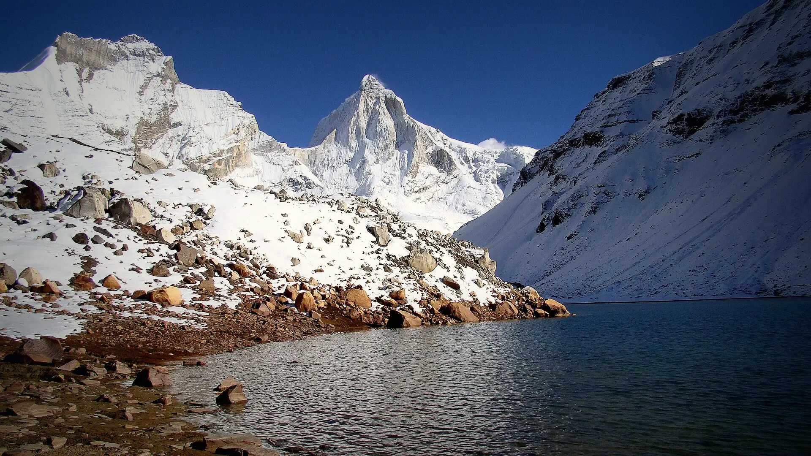

03Day 3 · Gangotrikm 0.1
Behind the temple
~245kmFrom Dehradun · Via Uttarkashi
After a day in Gangotri to acclimatise, the trail starts across the bridge behind the temple and climbs beside the Kedar Ganga.

Photo: Kailas98, CC BY-SA 3.0केदारताल · Uttarkashi, Uttarakhand
The trek in one line, and what you can do with it.
Kedartal is short but steep: nearly 1,600 m of climbing from Gangotri, with an exposed rock slab on the way.
4 stops on the map, then the climb. Scroll the stops and the map follows.
03Day 3 · Gangotrikm 0.1
~245kmFrom Dehradun · Via Uttarkashi
After a day in Gangotri to acclimatise, the trail starts across the bridge behind the temple and climbs beside the Kedar Ganga.
04Day 4 · Kedar Kharak · 4,410 mkm 14.9
7kmToday · Past a landslide zone
Past a landslide zone where about 100 m of the old trail has gone, to Kedar Kharak below Bhrigupanth.
05Day 5 · Kedartal · 4,750 mkm 19.0
8kmThere and back · From Kedar Kharak
Over three boulder ridges, then along cairns, to Kedartal, fed by snow off Thalay Sagar, Meru and Bhrigupanth.
06Day 6 · Gangotrikm 37.9
15kmToday · All the way down
One long day back over the Spider Wall to Gangotri.
Best in May–Jun, Sep–Oct.
Dark: the months the trek’s sources call its best. Mid: possible. See all treks in May.
Base prices from 7 operators’ own pages, per person. GST and travel are often extra. Treqz sells nothing.
The practical things, then the questions people ask.
Gangotri rooms have plugs. After that there is none, so carry a power bank of 10,000 mAh or more. Keep batteries warm in your sleeping bag.
Himalayan Dream TreksThree vegetarian meals a day, plus evening tea and snacks. Eggs on some days.
Bikat AdventuresDry pit toilet tents at camp. On hard treks they may not go up to the highest camp.
Bikat AdventuresIn May–June, days are 15 to 20 °C lower down and 5 to 10 °C up high. High camps drop to −5 °C at night.
Bikat AdventuresThe nearest hospital is the District Hospital in Uttarkashi, near Vishwanath Chowk.
Himalayan Dream TreksAbout 38.0 km of walking over 7 days on the trail.
The highest point is 4,750 m, about 1,690 m above the start.
Its sources grade it Moderate–hard.
May–Jun, Sep–Oct. It is also possible in Apr, Nov.
₹14,000 to ₹25,000 per person: base prices from 7 operators' own pages. GST and travel are often extra.
Full-sleeve tops ×2–3, Fleece T-shirt, Fleece jacket or sweater, Down or Hollofil jacket, Waterproof jacket or poncho, Thermal inners, Trek pants ×2, Waterproof + woollen gloves. The full list is on the 3D page.
Its sources do not list December to February as a trekking season.
Its sources grade it Moderate–hard and it takes 7 days on the trail, with a highest point of 4,750 m.
Gaumukh Tapovan, Dayara Bugyal, Dodital, Madmaheshwar, Satopanth Tal.


Treks in May · Treks in June · Treks in September · Treks in October · Treks in Uttarakhand · Difficult Treks in Uttarakhand · High-Altitude Treks in India (Above 4,500 m) · 7 Day Treks in India · Treks in Uttarkashi, Uttarakhand · Highest Treks in India · Kedartal vs Gaumukh Tapovan · Kedartal vs Dayara Bugyal · Kedartal vs Dodital · Free trek finder · All treks in 3D